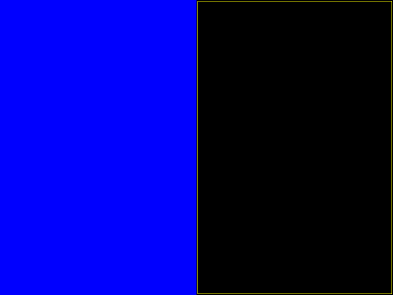

Simple test of nested viewboxes, demonstrating the three methods that can be used by a viewbox to provide clipping.
In the root scene are two viewboxes: the left viewbox uses the ‘viewport’ clipping method and a PanZoomCamera, whereas the right viewbox uses the ‘fbo’ clipping method and a base Camera (null transform).
Each of these viewboxes contains again two viewboxes, with the same differences. In this way we test embedding each type of viewbox inside each type.
This is what it should look like:
The plot line has a “marker” region on the left side that points in the +y direction. In pixel coordinates, this is normally expected to point downward (because the pixel y-axis points down). However, the default behavior for PanZoomCamera is to reverse its internal y-axis relative to its parent.

+y upward +y upward +y downward +y downward
import numpy as np
from vispy import app
from vispy import scene
#gloo.gl.use('desktop debug')
# <<< Change method here
# With the None method you can see the absence of clipping.
# With the 'fbo' method you can see the texture interpolation (induced by
# a delibirate mismatch in screen and textue resolution)
# Try different combinarions, like a viewport in an fbo
CLIP_METHOD1 = 'viewport' # none, viewport, fbo (fragment to come)
CLIP_METHOD2 = 'fbo'
# Create lines for use in ndc and pixel coordinates
N = 1000
color = np.ones((N, 4), dtype=np.float32)
color[:, 0] = np.linspace(0, 1, N)
color[:, 1] = color[::-1, 0]
pos = np.empty((N, 2), np.float32)
pos[:, 0] = np.linspace(0., 1., N)
pos[:, 1] = np.random.normal(loc=0.5, scale=0.03, size=N)
pos[N/2:N/2+20, 1] = 0.9 # So we can see which side is up
# Create canvas
canvas = scene.SceneCanvas(size=(800, 600), show=True, keys='interactive')
#
# Create viewboxes on left ...
#
w, h = canvas.size
w2 = w / 2.
h2 = h / 2.
# left (+y up)
vb1 = scene.widgets.ViewBox(parent=canvas.scene, name='vb1',
margin=2, border_color='red')
vb1.pos = 0, 0
vb1.size = w2, h
vb1.camera.rect = (0, 0, 1, 1)
vb1.camera.interactive = False
# bottom-left (+y down)
vb11 = scene.widgets.ViewBox(parent=vb1.scene, name='vb11',
margin=0.02, border_color='green')
vb11.pos = 0, 0
vb11.size = 1, 0.5
vb11.camera.rect = (0, 0, 1, 1)
line11 = scene.visuals.Line(pos=pos, color=color, mode='gl', parent=vb11.scene)
# top-left (+y up)
vb12 = scene.widgets.ViewBox(parent=vb1.scene, name='vb12',
margin=0.02, border_color='blue')
vb12.pos = 0, 0.5
vb12.size = 1, 0.5
vb12.set_camera(None) # use parent cs
# vb12 does not apply any scaling, so we do that manually here to match vb11
line12 = scene.visuals.Line(pos=pos * [[1.0, 0.5]], color=color, mode='gl',
parent=vb12.scene)
#
# Create viewboxes on right ...
#
# right (+y down)
vb2 = scene.widgets.ViewBox(parent=canvas.scene, name='vb2',
margin=2, border_color='yellow')
vb2.pos = w2, 0
vb2.size = w2, h
vb2.set_camera(None)
vb2.camera.interactive = False
# top-right (+y up)
vb21 = scene.widgets.ViewBox(parent=vb2.scene, name='vb21',
margin=10, border_color='purple')
vb21.pos = 0, 0
vb21.size = w2, h2
vb21.camera.rect = (0, 0, 1, 1)
line21 = scene.visuals.Line(pos=pos, color=color, mode='gl', parent=vb21.scene)
# bottom-right (+y down)
vb22 = scene.widgets.ViewBox(parent=vb2.scene, name='vb22',
margin=10, border_color='teal')
vb22.pos = 0, h2
vb22.size = w2, h2
vb22.set_camera(None) # use parent cs
# vb22 does not apply any scaling, so we do that manually here to match vb21
line22 = scene.visuals.Line(pos=pos * [[w2, h2]], color=color, mode='gl',
parent=vb22.scene)
# Set preferred clipping methods
for vb in [vb1, vb11, vb21]:
vb.clip_method = CLIP_METHOD1
for vb in [vb2, vb12, vb22]:
vb.clip_method = CLIP_METHOD2
if __name__ == '__main__':
app.run()